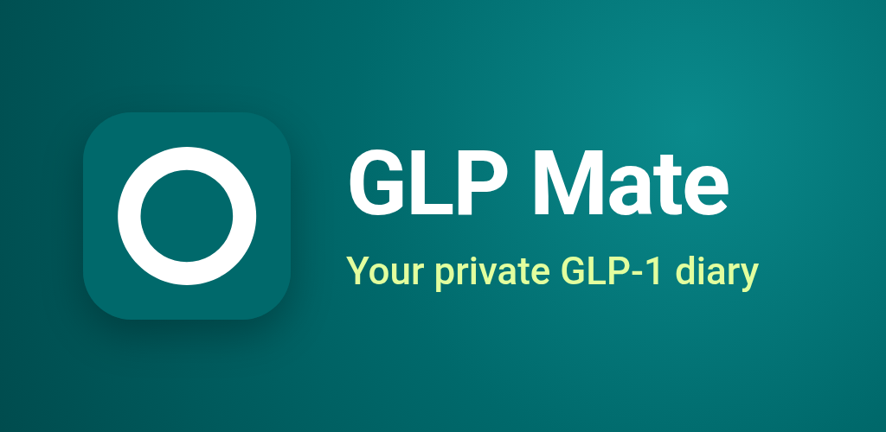
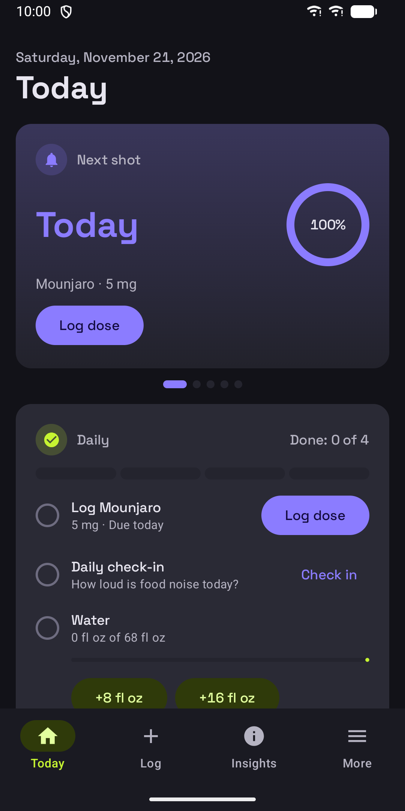

GLP Mate: GLP-1-Tagebuch
Privates GLP-1-Tagebuch: Spritzen, Nebenwirkungen, Gewicht, Essen, Vorrat.




Über die App
GLP Mate ist ein privates Tagebuch für Menschen, die GLP-1-Medikamente wie Semaglutid, Tirzepatid oder Liraglutid nehmen, ob als Pen, Tablette oder Vial aus der Apotheke. Alles, was du einträgst, bleibt verschlüsselt auf deinem Handy. Kein Konto, keine Werbung, kein Tracking. SPRITZEN UND DOSEN Lege ein oder mehrere Medikamente an, jedes mit eigenem Rhythmus: wöchentlich, täglich oder alle paar Tage, zur Uhrzeit deiner Wahl. Trage jede Dosis mit Zeit, Menge in mg, Einstichstelle, Schmerz, Chargennummer und Notiz ein. Die App schlägt die nächste Einstichstelle nach deiner eigenen Reihenfolge vor. Ein Dosisplan kann aus der Fachinformation vorbefüllt werden; du bestätigst oder änderst ihn. GLP Mate empfiehlt nie eine Dosis. ERINNERUNGEN Eine Erinnerung, wenn eine Spritze fällig ist, mit Knöpfen zum Eintragen oder Verschieben. Optional: abendlicher Check-in, Wasser und Vorrat. Die Texte sind diskret und erscheinen nie auf dem Sperrbildschirm. TÄGLICHER CHECK-IN Bewerte Food Noise von 0 bis 10, dazu nach Wunsch Hunger, Sättigung, Stimmung, Energie, Schlaf und Stuhlgang. Erfasse 13 häufige Nebenwirkungen oder eigene, jeweils leicht, mittel oder stark. Bei starkem Erbrechen oder starken Bauchschmerzen zeigt die App einen deutlichen Hinweis, ärztliche Hilfe zu suchen. KÖRPER Gewicht mit 7-Tage-Durchschnitt, Körpermaße, BMI und ein Zielbereich. ESSEN UND WASSER Trage Mahlzeiten mit optionalem Eiweiß, Ballaststoffen und Kalorien ein, wiederhole Lieblingsmahlzeiten mit einem Tipp und setze Tagesziele für Eiweiß, Ballaststoffe, Wasser und Schritte. VORRAT Verwalte jeden Pen, jedes Vial und jede Packung. Eingetragene Dosen werden vom aktuellen Vorrat abgezogen, und du bekommst einen Hinweis, wenn der Vorrat knapp wird oder etwas bald abläuft. HEUTE UND AUSWERTUNG Heute zeigt deine nächste Spritze, eine Tagesliste und was demnächst ansteht. Die Auswertung zeigt dein Gewicht der letzten bis zu 3 Monate mit Dosiswechseln. Jedes Diagramm gibt es auch als Tabelle. Abzeichen gibt es für regelmäßiges Eintragen, nie für verlorene Kilos. HEALTH CONNECT Lies auf Wunsch Gewicht, Körperfett, Magermasse und Schritte aus Health Connect und speichere dort die Gewichte und das Wasser, die du in der App einträgst. FÜR DIE ARZTPRAXIS Erstelle einen übersichtlichen PDF-Bericht für einen beliebigen Zeitraum und teile ihn, wie du willst, oder exportiere alle Einträge als CSV. DATENSCHUTZ UND BACKUP Der Datenbankschlüssel ist durch den Android Keystore geschützt. Eine optionale App-Sperre nutzt Fingerabdruck, Gesicht oder Displaysperre. Erstelle eine verschlüsselte Sicherungsdatei mit deinem eigenen Passwort, sichere wöchentlich in einen Ordner deiner Wahl oder nachts in einen versteckten App-Ordner in deinem eigenen Google Drive, vorher auf dem Handy verschlüsselt. Keine Analyse, nichts geht an den Entwickler, und ein Knopf löscht alle Daten. PREMIUM (OPTIONAL, EINMALKAUF) Alles Eintragen, Erinnerungen, Backups und der Basis-Arztbericht sind kostenlos. Ein einmaliger In-App-Kauf ohne Abo schaltet frei: geschätzter Wirkstoffspiegel je Wirkstoff, Food Noise und Hunger nach Tagen seit der Spritze, eine Übersicht der Nebenwirkungen, Gewichtsdiagramme über 6 Monate und gesamt, verschlüsselte Fortschrittsfotos mit Vergleich nebeneinander und zusätzliche Berichtsseiten. Auf Deutsch, Englisch und Spanisch, mit metrischen oder imperialen Einheiten. GLP Mate ist ein persönliches Tagebuch und kein Medizinprodukt. Die App gibt keinen medizinischen Rat, stellt keine Diagnosen und empfiehlt keine Dosen. Schätzungen und Diagramme dienen nur zur Information. Halte dich immer an deine Ärztin oder deinen Arzt und an die Packungsbeilage.